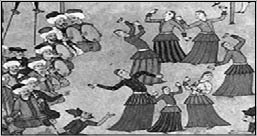
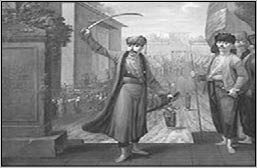
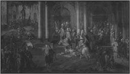

III. AHMED (1673-1736)
“Bu şehri İstanbul ki bi misl ü behâdir;
Bir sengine yekpare Acem mülki fedadır.
Bazari hüner madeni ilm ü ulemadır.”
Nedim
Bu mısralar, Osmanlı’nın ünlü divan edebiyatı şairlerinden Nedim’in, Lale Devri’nin günlük hayatını ve İstanbul’un tasvirini yaptığı unutulmaz mısralarıdır. Lale Devri, Osmanlı Devleti’nde, III. Ahmed’in sultanlığı döneminde, 1718 yılında Avusturya ile imzalanan Pasarofça Antlaşması ile başlayıp, 1730 yılındaki Patrona Halil İsyanı ile sona eren dönemdir.
Babası IV. Mehmed, annesi Mehpare Emetullah Rabia Gülnuş Sultan olan III. Ahmed, 30 Aralık 1673 tarihinde doğmuştur. Yirmi Üçüncü Osmanlı Padişah’ı III. Ahmed, uzun boylu, kara gözlü, doğan burunlu ve buğday benizli idi. Hattat ve şairdi. “Necib” mahlasıyla şiirler yazmıştır. Musikiden de çok iyi anlardı.
III. Ahmed’in gençliği, diğer Osmanlı şehzadelerine rağmen bir hayli serbest geçmiştir. Şehzadelerin öldürülme geleneği kalktığı için, rahat bir hayat sürdü. İstediği her şeyle ilgilendiği için bilgisi de görgüsü de arttı. Avrupa’daki gelişmeleri inceleme fırsatı buldu. Matbaanın Osmanlı Devleti’ne girmesi için çok çaba sarf etmiştir.
Sultan II. Mustafa’nın tahttan indirilmesi üzerine III. Ahmed, 22 Ağustos 1703 tarihinde Edirne’de taht’a geçmiştir.
Padişahlığının ilk günleri, tamamen disiplinden çıkmış yeniçerileri yatıştırma çabalarıyla geçti. Ancak kendisini padişah yapan yeniçerilere karşı etkili olamadı. Sadrazam olarak tayin ettiği Çorlulu Ali Paşa, ona idari konularda yardımcı olmaya çalıştı, hazine için yeni düzenlemelerde bulundu ve Sultan III. Ahmed’e, rakipleriyle mücadelesinde destek oldu.
Ayrıca, ilkokulun zorunlu hâle gelmesi, III. Ahmed’in padişahlığı döneminde başlamıştır.
Sultan III. Ahmed zamanında, Rusya ile olan ilişkilerde gerginlik yaşandı. Bunun sebebi Rusya’nın, Orta Asya üzerinde yayılma siyaseti izlemesi, Balkanlar’daki toplumları Slavlaştırmaya çalışması, açık ve sıcak denizlere inmek istemesiydi.
Saltanatı döneminde gerçekleşen önemli olaylar, sırasıyla; Prut Savaşı, Osmanlı-Avusturya-Venedik Savaşı ve Pasarofça Antlaşması, Lale Devri, Osmanlı-İran Savaşı, Hemedan Antlaşması ve son olarak, tahttan inmesine sebep olan Patrona Halil İsyanı’dır.
PRUT SAVAŞI
Osmanlı Devleti Sadrazamı Baltacı Mehmed Paşa komutasındaki Osmanlı ordusunun, Rusları, Prut Nehri yakınlarında yenmesi üzerine Prut Antlaşması imzalanmıştır. Antlaşmanın koşulları şunlardır:
1- Azak Kalesi Osmanlılara geri verilecek. (Karadeniz tekrar Osmanlı gölü hâline geldi.)
2- Ruslar, İstanbul’da daimi elçi bulundurmayacaklar.
3- İsveç Kralı Şarl’ın, serbestçe ülkesine dönmesine izin vereceklerdir.
4- Ruslar, Lehistan’ın iç işlerine karışmayacaklardır.
Osmanlı ordusunun zayıf düştüğünü ve Rusların yeni bir ittifak oluşturabileceğini düşünen Baltacı Mehmed Paşa, antlaşmayı imzalamıştır.
PASAROFÇA ANTLAŞMASI
Avusturya, Karlofça Antlaşması’nın şartlarına göre Mora’nın geri verilmesini istiyordu. Bu nedenden dolayı Avusturya’ya savaş açılmıştı. Sadrazam Damat Silahtar Ali Paşa komutasındaki Osmanlı ordusu Macaristan’a girdi. 5 Ağustos 1716 tarihinde Petrovaradin Muharebesi’nde, Osmanlı kuvvetleri yenik düştü. Bu savaşta Sadrazam Silahtar Ali Paşa şehit düşmüştür. Belgrad, düşman eline geçti. Sadrazamlığa getirilen Damat İbrahim Paşa, barış teklif etti. 1 Temmuz 1718 tarihinde yapılan Pasarofça Antlaşması’na göre Yukarı Sırbistan, Belgrad ve Banat Yaylası Avusturya’ya; Dalmaçya, Bosna ve Arnavutluk kıyıları Venedik’e verildi. Mora Yarımadası, Osmanlılarda kalmıştır.
1724 yılında, İran’da taht kavgaları başlamıştı. Bu durumdan yararlanarak İran’ı ele geçirmek isteyen Rusya, harekete geçti. İran’ın, Rusya’nın eline geçmesini istemeyen Osmanlı Devleti, İran’a sefer düzenledi. Ruslarla yapılan İstanbul Antlaşması’na göre Azerbaycan’da alınan yerler Osmanlılarda kalacak, Derbent, Bakü ve Dağıstan, Ruslara bırakılacaktı.
LALE DEVRİ
Pasarofça Antlaşmasından sonra 12 yıl süren devre, “Lale Devri” denmektedir. III. Ahmed ve Damat İbrahim Paşa, barışçı bir siyasetten yanaydılar. Bu politikadan dolayı Lale Devri ortaya çıkmıştır.

III. Ahmed’in oğullarının 14. gün şenliklerinde oynayan köçekler (Surname-i Vehbi, 1720)
Lale Devri’nde birçok alanda yenilikler olmuştur. Avrupa’ya ilk kez geçici elçiler gönderilmiştir. Bu dönem içerisinde İbrahim Müteferrika, ilk matbaayı kurmuştur. Bunların yanı sıra Yalova’da bir kâğıt fabrikası kurulmuştur. İtfaiye örgütü, bu dönem içerisinde oluşturulmuştur.
Bu dönem içerisinde her yerde köşkler, saraylar ve lale bahçeleri yapılmıştır.

III. Ahmed yeniçerilere altın atarken
1723-1727 OSMANLI İRAN SAVAŞI VE HEMEDAN ANTLAŞMASI
1723 yılında Şirvan’da çıkan karışıklıklar üzerine Rusya ile anlaşan Osmanlı Devleti’nin, Kafkasya ve İran’a üç cephede savaş açtığı; Hoy, Hemedan ve Revan’dan sonra Van Valisi Serasker Köprülüzade Abdullah Paşa’nın, 1725 yılında Tebriz’e girdiği bilinmektedir. Ama ardından Andican’da Safevîlerin Afşar asıllı kumandanı Nadir karşısında alınan yenilgi üzerine, İran Şahı II. Tahmasp ile Hemedan Barışı imzalanmıştır.
PATRONA HALİL İSYAN

Patrona Halil

Patrona Halil İsyanı sırasında yaşananlar; Ressam Jean-Baptiste van Mour’un tablosu
Damat İbrahim Paşa’nın meydana getirdiği zevk devrinden memnun olmayanlar, tüm bu yapılanları israf olarak görenler vardı. Bu sırada İran seferinden de olumsuz haber gelmesi, her şeyin tuzu biberi olmuştu. Yeniçeriler içerisinde de huzursuzluklar başlamıştı. 17. Ağa Bölüğü Yeniçerisi Patrona Halil ve yandaşları, 25 Eylül 1730’da ayaklanmayı başlatmışlardı. Ancak bazı endişelerden dolayı vazgeçmişlerdi. Üç gün sonra ayaklanmayı tekrar başlattılar. Esnafı da kendilerine katılmayı razı ettiler.
Bu isyanlar üzerine III. Ahmed, isyancılara ne istediklerini sorar. İsyancılar, Damat İbrahim Paşa ve 37 kişinin kendilerine teslim edilmesini ister. İsyancıların istekleri kabul görür.
Ancak isyankârlar durmadılar. Bu sefer de III. Ahmed’in tahttan indirilmesini istediler. Bunu kabul eden III. Ahmed, 1 Ekim 1730 tarihinde tahtı Şehzade Mahmud’a bıraktı.
III. Ahmed, altı yıl sonra, 1 Temmuz 1736 tarihinde vefat eder. Yeni Camii Turhan Valide Türbesi’ne defnedilir.
EŞLERİ
1- Emetullah Sultan
2- Rukiyye Sultan
3- Emine Mihr-î-Şah Kadın Sultan
4- Rabia Sermi Sultan
5- Zeyneb Sultan
6- Emine Musall Kadın
7- Hanife Sultan
8- Gülşen Kadın
9- Ümmü Gülsüm Sultan
10- Meyli Sultan
11- Fatma Hüma Şah Sultan
12- Nijad Sultan
13- Nazife Sultan
14- Nazife Sultan 2
15- Hafsa Sultan
16- Yenihan Şah Sultan
ERKEK ÇOCUKLARI
1- III. Mustafa
2- Şehzade Süleyman
3- Şehzade Bayezid
4- Şehzade Mehmed
5- Şehzade İbrahim
6- Şehzade Numan
7- Şehzade Selim
8- Şehzade Ali
9- Şehzade İsa
10- Şehzade Murad
11- Şehzade Seyfeddin
12- Şehzade Abdülmecid
13- Şehzade Abdülmelik
KIZ ÇOCUKLARI
1- Emine Sultan
2- Rabia Sultan
3- Habibe Sultan
4- Zeyneb Sultan
5- Zübeyde Sultan
6- Esma sultan
7- Hatice Sultan
8- Rukiye Sultan
9- Saliha Sultan
10- Atike Sultan
11- Reyhan Sultan
12- Esime Sultan
13- Ferdane Sultan
14- Nazife Sultan
15- Naile Sultan
16- Ayşe Sultan
17- Fatma Sultan
18- Emetullah Sultan
19- Ümmüselma Sultan
20- Emine Sultan
21- Rukiye Sultan
22- Zeyneb Sultan
23- Sabiha Sultan